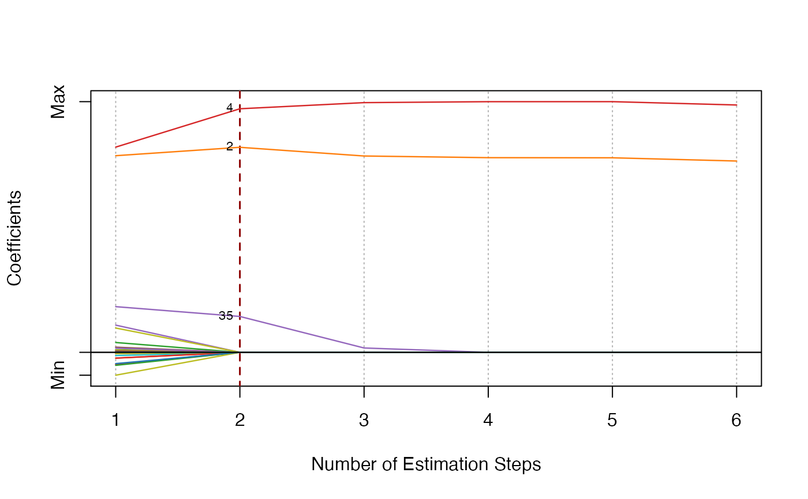
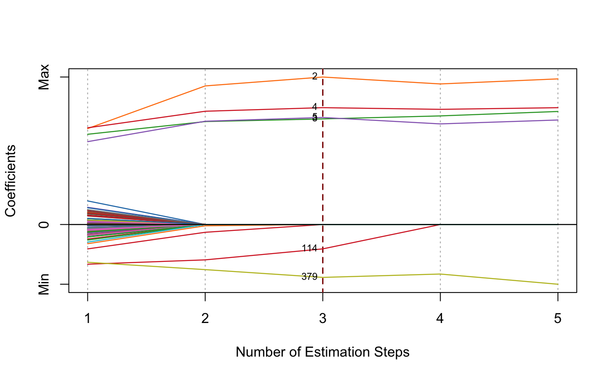
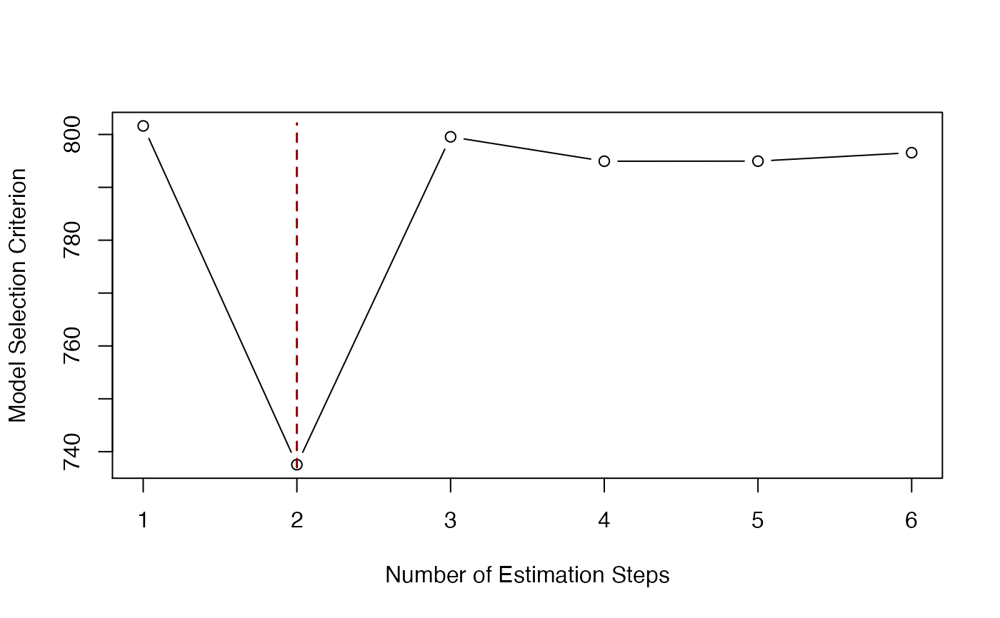
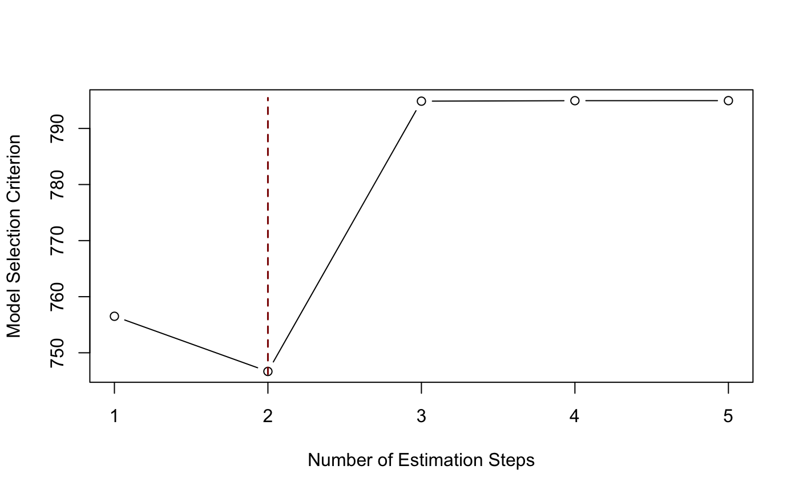
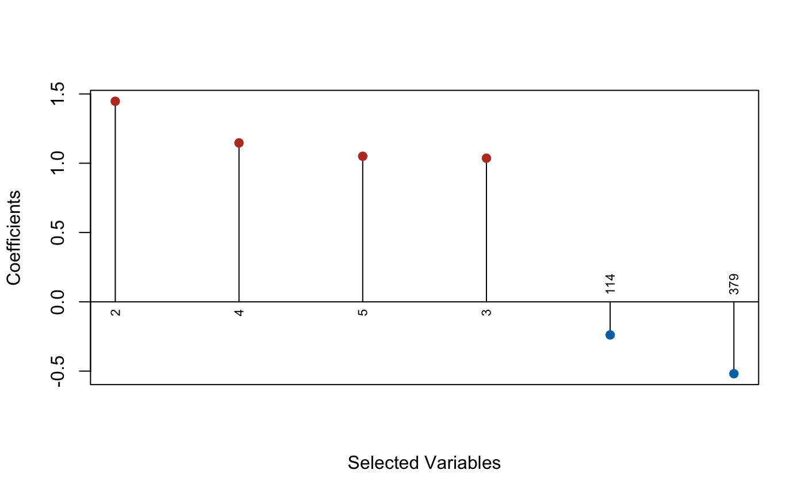
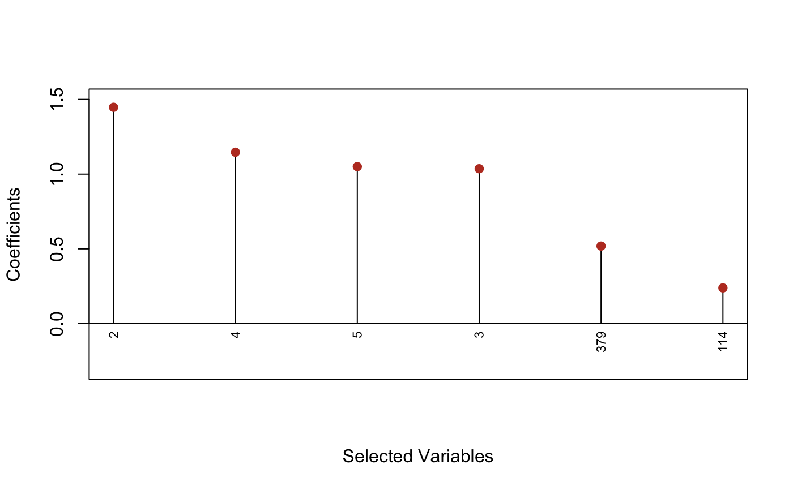

Plot msaenet model objects.
# S3 method for msaenet plot(x, type = c("coef", "criterion", "dotplot"), nsteps = NULL, highlight = TRUE, col = NULL, label = FALSE, label.vars = NULL, label.pos = 2, label.offset = 0.3, label.cex = 0.7, label.srt = 90, xlab = NULL, ylab = NULL, abs = FALSE, ...)
| x | An object of class |
|---|---|
| type | Plot type, |
| nsteps | Maximum number of estimation steps to plot. Default is to plot all steps. |
| highlight | Should we highlight the "optimal" step
according to the criterion? Default is |
| col | Color palette to use for the coefficient paths.
If it is |
| label | Should we label all the non-zero variables of the
optimal step in the coefficient plot or the dot plot?
Default is |
| label.vars | Labels to use for all the variables
if |
| label.pos | Position of the labels. See argument
|
| label.offset | Offset of the labels. See argument
|
| label.cex | Character expansion factor of the labels.
See argument |
| label.srt | Label rotation in degrees for the Cleveland dot plot.
Default is |
| xlab | Title for x axis. If is |
| ylab | Title for y axis. If is |
| abs | Should we plot the absolute values of the coefficients
instead of the raw coefficients in the Cleveland dot plot?
Default is |
| ... | Other parameters (not used). |
dat = msaenet.sim.gaussian( n = 150, p = 500, rho = 0.6, coef = rep(1, 5), snr = 2, p.train = 0.7, seed = 1001) msasnet.fit = msasnet( dat$x.tr, dat$y.tr, alphas = seq(0.2, 0.8, 0.2), nsteps = 5L, tune.nsteps = "ebic", seed = 1003) plot(msasnet.fit)plot(msasnet.fit, label = TRUE)plot(msasnet.fit, label = TRUE, nsteps = 5)plot(msasnet.fit, type = "criterion")plot(msasnet.fit, type = "criterion", nsteps = 5)plot(msasnet.fit, type = "dotplot", label = TRUE)plot(msasnet.fit, type = "dotplot", label = TRUE, abs = TRUE)